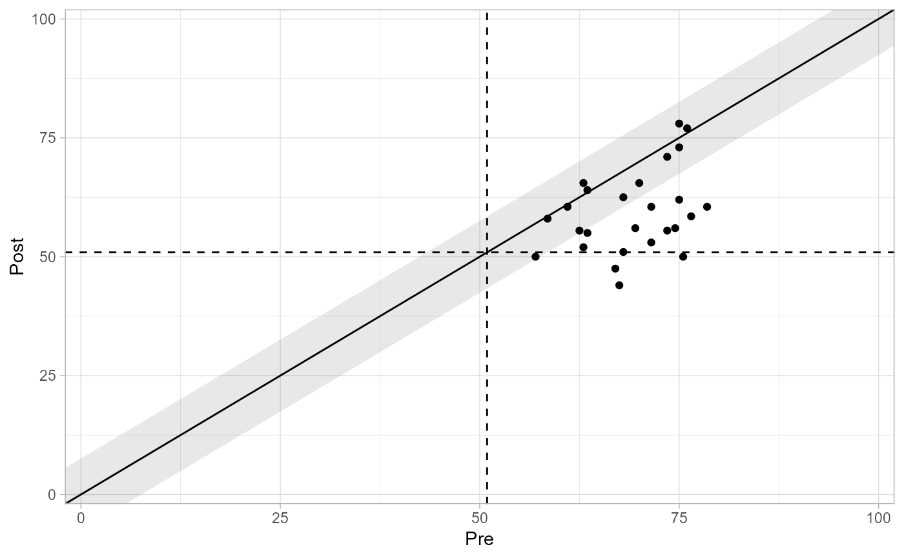

Clinical Significance
clinical_significance.RdThis function conducts a clinical significance analysis by determining which patients changed reliably and moved from the clinical to the functional population during a study.
Arguments
- data
A tidy data frame
- id
Participant ID
- time
Time variable
- outcome
Outcome variable
- group
Grouping variable
- pre
Pre measurement
- post
Post measurement
- m_functional
Mean of the functional population
- sd_functional
Standard deviation of the functional population
- type
Cutoff type. Available are
"a","b", and"c". Defaults to"a"(see details for further information in which cutoff to choose)- reliability
The instrument's reliability estimate. If you selected the NK method, the here specified reliability will be the instrument's pre measurement reliability
- reliability_post
The instrument's reliability at post measurement. This is only relevant for the NK method
- better_is
Which direction means a better outcome for the employed outcome? Available are
"lower"(lower outcome scores are desirable, the default) and"higher"(higher outcome scores are desirable)
- method
Clinical significance method. Available are
"JT"(Jacobson & Truax, 1991, the default)"GLN"(Gulliksen, Lord, and Novick; Hsu, 1989, Hsu, 1995)"HLL"(Hsu, Linn & Nord; Hsu, 1989)"EN"(Edwards & Nunnally; Speer, 1992)"NK"(Nunnally & Kotsch, 1983), requires a reliability estimate at post measurement. If this is not supplied, reliability and reliability_post are assumed to be equal"HA"(Hageman & Arrindell, 1999)"HLM"(Hierarchical Linear Modeling; Raudenbush & Bryk, 2002), requires at least three measurements per patient
Details
By default, the JT method is used, but there are other methods implemented (see description of arguments).
It is generally recommended to use cutoff "c", thus, incorporating
information of the clinical and functional population into the cutoff
calculation.
References
Jacobson, N. S., & Truax, P. (1991). Clinical significance: A statistical approach to defining meaningful change in psychotherapy research. Journal of Consulting and Clinical Psychology, 59(1), 12–19. https://doi.org/10.1037//0022-006X.59.1.12
Hsu, L. M. (1989). Reliable changes in psychotherapy: Taking into account regression toward the mean. Behavioral Assessment, 11(4), 459–467.
Hsu, L. M. (1995). Regression toward the mean associated with measurement error and the identification of improvement and deterioration in psychotherapy. Journal of Consulting and Clinical Psychology, 63(1), 141–144. https://doi.org/10.1037//0022-006x.63.1.141
Speer, D. C. (1992). Clinically significant change: Jacobson and Truax (1991) revisited. Journal of Consulting and Clinical Psychology, 60(3), 402–408. https://doi.org/10.1037/0022-006X.60.3.402
Nunnally, J. C., & Kotsch, W. E. (1983). Studies of individual subjects: Logic and methods of analysis. British Journal of Clinical Psychology, 22(2), 83–93. https://doi.org/10.1111/j.2044-8260.1983.tb00582.x
Hageman, W. J., & Arrindell, W. A. (1999). Establishing clinically significant change: increment of precision and the distinction between individual and group level analysis. Behaviour Research and Therapy, 37(12), 1169–1193. https://doi.org/10.1016/S0005-7967(99)00032-7
Raudenbush, S. W., & Bryk, A. S. (2002). Hierarchical Linear Models - Applications and Data Analysis Methods (2nd ed.). Sage Publications.
Examples
# Clinical significane for "negative" outcomes (lower values are desirable)
jacobson_1989 %>%
clinical_significance(
id = subject,
time = time,
outcome = gds,
pre = "pre",
reliability = 0.80
)
#> Clinical Significance Results (JT)
#>
#> Category | n | Percent
#> ---------------------------
#> Recovered | 10 | 0.385
#> Improved | 4 | 0.154
#> Unchanged | 12 | 0.462
#> Deteriorated | 0 | 0.000
#> Harmed | 0 | 0.000
# Clinical significane for "positive" outcomes (higher values are desirable)
jacobson_1989 %>%
clinical_significance(
id = subject,
time = time,
outcome = das,
pre = "pre",
reliability = 0.80,
better_is = "higher"
)
#> Clinical Significance Results (JT)
#>
#> Category | n | Percent
#> ---------------------------
#> Recovered | 10 | 0.333
#> Improved | 6 | 0.200
#> Unchanged | 13 | 0.433
#> Deteriorated | 1 | 0.033
#> Harmed | 0 | 0.000
# Clinical significance incorporating descriptives of a functional population.
# Make sure to select type = "c" to incorporate the specified functional
# descriptives.
jacobson_1989 %>%
clinical_significance(
id = subject,
time = time,
outcome = gds,
pre = "pre",
reliability = 0.80,
m_functional = 30,
sd_functional = 7,
type = "c"
)
#> Clinical Significance Results (JT)
#>
#> Category | n | Percent
#> ---------------------------
#> Recovered | 3 | 0.115
#> Improved | 11 | 0.423
#> Unchanged | 12 | 0.462
#> Deteriorated | 0 | 0.000
#> Harmed | 0 | 0.000
# Change the clinical significance method
jacobson_1989 %>%
clinical_significance(
id = subject,
time = time,
outcome = gds,
pre = "pre",
reliability = 0.80,
m_functional = 30,
sd_functional = 7,
type = "c",
method = "EN"
)
#> Clinical Significance Results (EN)
#>
#> Category | n | Percent
#> ---------------------------
#> Recovered | 4 | 0.154
#> Improved | 13 | 0.500
#> Unchanged | 9 | 0.346
#> Deteriorated | 0 | 0.000
#> Harmed | 0 | 0.000
jacobson_1989 %>%
clinical_significance(
id = subject,
time = time,
outcome = gds,
pre = "pre",
reliability = 0.80,
m_functional = 30,
sd_functional = 7,
type = "c",
method = "HA"
)
#> Clinical Significance Results (HA Individual Level)
#>
#> Category | n | Percent
#> ---------------------------
#> Recovered | 1 | 0.038
#> Improved | 16 | 0.615
#> Unchanged | 9 | 0.346
#> Deteriorated | 0 | 0.000
#> Harmed | 0 | 0.000
#>
#> Clinical Significance Results (HA Group Level)
#>
#> Category | Percent
#> --------------------
#> Changed | 0.900
#> Functional | 0.163
# And plot your results
results <- jacobson_1989 %>%
clinical_significance(
id = subject,
time = time,
outcome = gds,
pre = "pre",
reliability = 0.80,
m_functional = 30,
sd_functional = 7,
type = "c"
)
plot(results)
